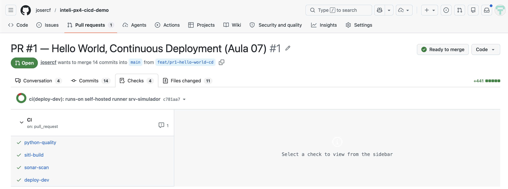
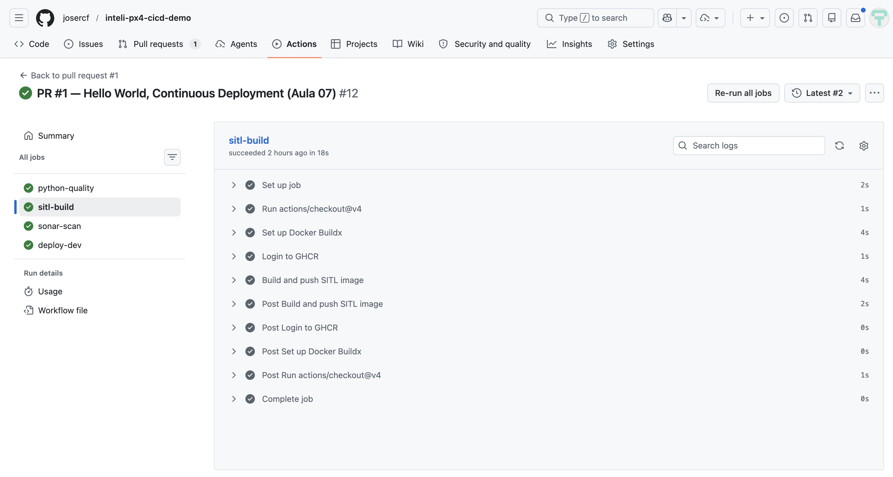
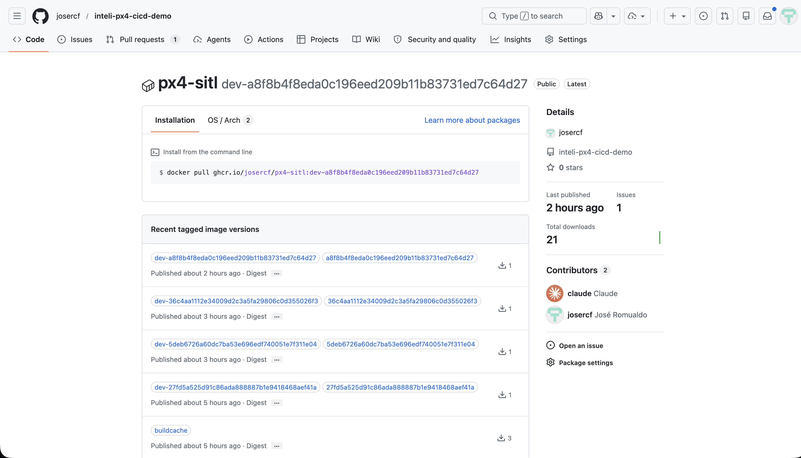
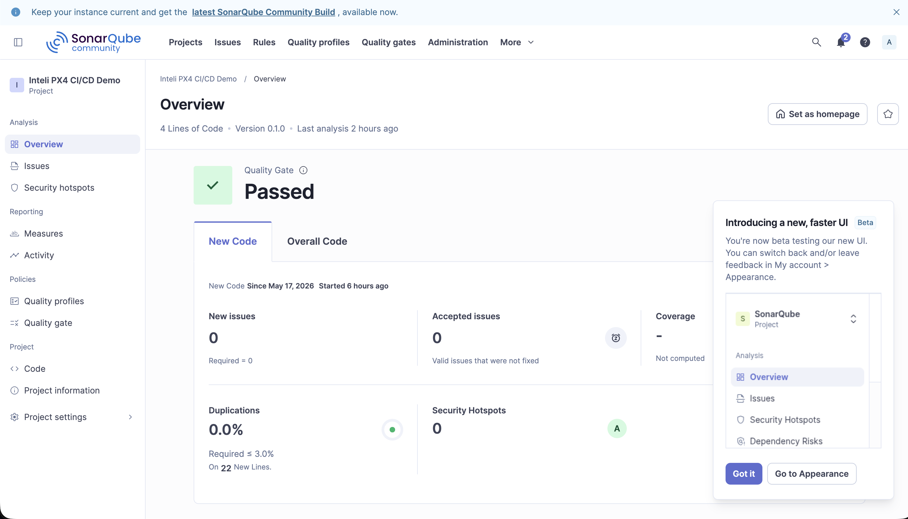
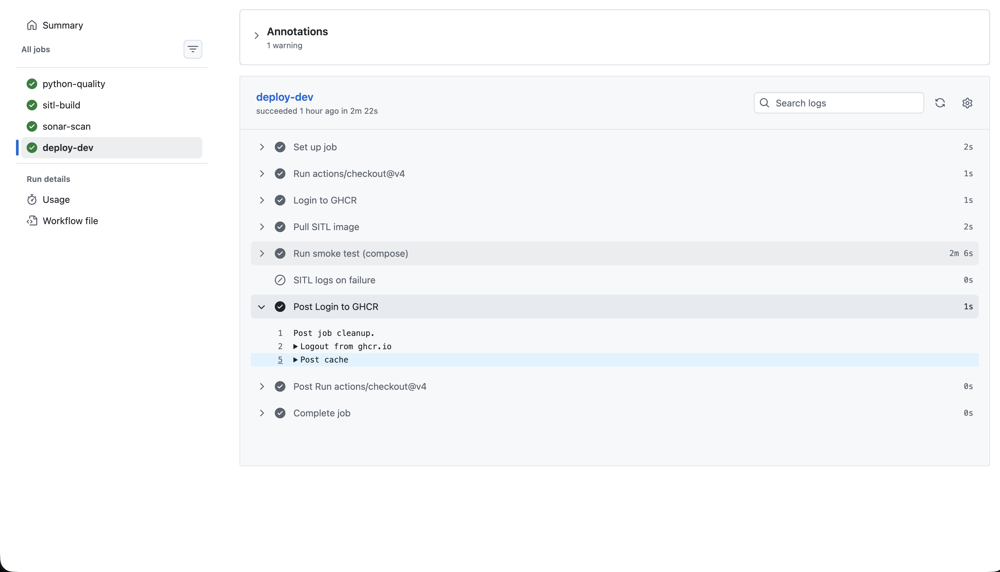

Pipeline verde produzindo artefato imutável a cada commit. Hoje a gente coloca um firmware de drone PX4 no ar — de container.
Sprint 02 fechou com CI rodando SAST e DAST. Sprint 03 começa o lado D do DevOps — o que acontece depois do código verde. Quatro blocos, um walkthrough longo do PR #1 de um demo real de firmware PX4, fechamento em 10 min.
| Bloco | Atividade | Duração |
|---|---|---|
| 10h00, Daily Time | Check-in da Sprint 03, cronômetro de 15 min | 15 min |
| 10h15, Bloco 1 | CI, CD, Continuous Deployment, imutabilidade e rastreabilidade | 20 min |
| 10h35, Bloco 2 | Firmware é diferente: SITL, containers, MAVSDK | 20 min |
| 10h55, Bloco 3 | Walkthrough ao vivo: repo, pipeline, GHCR, Sonar | 40 min |
| 11h35, Bloco 4 | Hands-on: abra um PR no demo e veja a esteira reagir | 15 min |
| 11h50, Fechamento | Quiz, checklist, auto-estudo da Aula 08 | 10 min |
Sprint 02 fechou. Como ficou o SAST de cada grupo? Achado mais sério, decisão tomada (fix, aceitar, suppress), e se DAST entraria no plano da Sprint 03. Uma volta rápida, uma frase por grupo.
Ao fim desta aula, cada grupo entende a diferença entre CI, CDelivery e CDeployment, sabe ler um pipeline de 4 jobs no GitHub Actions, identifica artefato imutável publicado em um registry, e abre um PR que dispara a esteira inteira.
Distinguir Continuous Integration, Continuous Delivery e Continuous Deployment, com critério claro de "quem aperta o botão".
Ler um workflow do GitHub Actions e mapear cada job a uma responsabilidade (lint, build, publish, deploy).
Justificar por que artefatos imutáveis (tag por commit SHA) são pré-requisito para CD em produção crítica.
Abrir um PR no demo, observar os 4 jobs rodando, conferir a imagem publicada no GHCR e a análise no Sonar.
Na Sprint 02 fechamos a esteira até "build verde". Lint, unit, SAST, scanner de imagem, tudo passando. A pergunta que abre a Sprint 03 é direta: pipeline verde, e agora? O artefato fica onde? Vai pra produção como? Quem aperta o botão? E se quebrar, como volta?
As 4 aulas vão evoluir um único repo de demo (firmware de drone PX4). Hoje: pipeline verde + artefato. Aula 08: métricas extraídas do simulador. Aula 09: bons testes de integração. Aula 10: gates como guardiões.
Três siglas, três níveis de automação, três decisões diferentes sobre quem aperta o botão de deploy.
Três palavras parecidas, três contratos distintos. O que muda em cada uma é "onde a automação termina e a decisão humana começa".
Cada push entra na branch principal automaticamente, depois de passar por lint, build, testes. Artefato gerado pode ou não ser publicado. Decisão humana: tudo após o merge.
O artefato é sempre publicado e está pronto pra deploy. Promoção entre ambientes (dev → staging → prod) requer clique humano. Padrão para sistemas críticos.
Build verde vai direto para produção, sem intervenção. Apropriado para sistemas com forte automação de teste e baixo risco (web apps, APIs). Inviável para firmware de drone.
PR #1 implementa um Continuous Delivery em prática: cada commit produz uma imagem com tag :<sha> no GHCR. Para subir em hardware real, alguém precisa apertar o botão. A aula 10 fecha esse loop com aprovação manual por ambiente.
A imagem que sobe em dev deve ser exatamente a mesma que vai pra staging e prod. Sem recompilar. Sem rebuild. Garantia disso: nome da imagem amarrado ao commit que a gerou.
:latestImagine: 23h de domingo, um drone agrícola da operação fez pouso forçado. O time recebe a ligação. Em quanto tempo dá pra responder: "qual versão estava embarcada, quem aprovou, o que mudou desde a última missão estável?". A resposta deveria ser "30 segundos", não "três horas vasculhando log".
Drone reporta no log: fw_sha=f87350b. Esse SHA é a fonte da verdade. Tudo a partir daqui é navegação.
Mesma tag :f87350b. SBOM anexado. Lista exata de dependências, compilador, flags de build.
Commit aponta para o PR que o introduziu. PR mostra revisores, comentários, jobs CI verdes. Quem aprovou, quando, com base em quê.
Três coisas: tag imutável por SHA, registry com retenção, e disciplina de PR no Git. Tirar qualquer uma quebra a cadeia. O pipeline de hoje configura as três.
Web app você roda em qualquer canto. Firmware embarcado precisa de um hardware (ou um simulador convincente o suficiente).
Bug em web app: usuário recarrega a página. Bug em firmware de drone: você liga pro seguro. Três restrições que mudam o jogo:
Falha em produção é acidente, não 500 no Datadog. Push direto pra hardware sem validação é negligência profissional.
Mesmo firmware roda em Pixhawk v6, v6x, Cube Orange. Cada combinação de hardware muda comportamento.
Software toma decisões em milissegundos sobre física real. Bug de timing pode ser invisível até a hora errada.
SITL — Software-In-The-Loop. Roda o firmware exato (mesmo binário, mesmo código) num simulador que finge ser hardware + ambiente. Testa em segundos o que antes precisava de bancada física. Não substitui voo real, mas filtra 90% dos defeitos antes deles encostarem em um drone.
Três componentes conversando por UDP. Cada um numa caixa, cada um com responsabilidade clara.
Binário do firmware compilado para Linux. Fala MAVLink em UDP 14540.
Protocolo binário padrão. Heartbeat, telemetria, comandos. UDP, leve.
Cliente alto nível. Conecta, arma, decola, executa missão, lê estado.
Backend de simulação none_iris (sem Gazebo). Suficiente para o PX4 boot, emitir heartbeat e MAVSDK conectar. O simulador físico (Gazebo Garden + modelo x500 com física de quadcopter) entra no PR #2, quando a gente vai executar missão real e extrair métricas.
PX4 SITL precisa de: Ubuntu 22.04, GCC específico, ~3GB de dependências de build, Gazebo Garden, MAVLink lib. "Funciona na minha máquina" é catástrofe garantida. Container é a resposta.
docker compose up + 12 min de buildDois containers separados (SITL e tester), comunicando via rede docker. Isso isola responsabilidades: a imagem SITL não tem Python, a do tester não tem Gazebo. Cada uma evolui no seu ritmo. Pré-publicação no GHCR permite que o tester rode em qualquer máquina sem rebuildar o SITL.
Abrir o repo, ler o workflow, mostrar a imagem no GHCR, abrir o Sonar. Tudo no projetor, ninguém precisa rodar local.
URL: github.com/josercf/inteli-px4-cicd-demo
inteli-px4-cicd-demo/
├── PX4-Autopilot/ ← submódulo, pinado em v1.16.2
├── libs/drone_modeling/dynamics.py ← código nosso, 100% testado
├── tests/
│ ├── unit/test_dynamics.py ← 4 testes, <0.1s
│ └── sitl/test_connection.py ← MAVSDK conecta no PX4
├── docker/
│ ├── Dockerfile.sitl ← PX4 build → imagem GHCR
│ └── Dockerfile.tools ← Python + MAVSDK
├── docker-compose.{yml,ci.yml} ← dev local / CI
├── .github/workflows/ci.yml ← 4 jobs
├── sonar-project.properties ← scanner config
└── docs/adrs/ADR-001-*.md ← decisão de wrapper+submódulo
Fork do PX4 traz ~2 GB de histórico de firmware que nunca vamos editar. Wrapper deixa material didático isolado, clone enxuto (~50MB inicial), e atualizar versão do PX4 vira decisão consciente (ADR-001). Mostrar o arquivo.
Aba Actions do GitHub. Cada job é uma caixa, e a dependência entre elas é o ponto-chave: sonar-scan espera python-quality pra reusar coverage; deploy-dev espera sitl-build publicar a imagem.
ruff + black + mypy strict + pytest unit + upload coverage.xml
~30sSonarQube scanner, publica métricas no servidor do instrutor
~40sdocker build → push GHCR como :<sha>; cache de layer
pull imagem, sobe via compose, valida que MAVSDK conecta
~2 minsonar-scan tem continue-on-error: true. Significa: análise roda e gera dashboard, mas se a qualidade cair o merge não é bloqueado. Isso é deliberado — Sonar como observação primeiro, como guardião depois. O enforcement vira gate obrigatório na Aula 10.

ci.yml comentado (parte 1)jobs:
python-quality:
runs-on: ubuntu-latest
steps:
- uses: actions/checkout@v4
with:
submodules: false # libs/ não precisa de PX4
- uses: actions/setup-python@v5
with:
python-version: "3.11"
cache: pip
- run: pip install -r requirements-dev.txt
- run: ruff check libs/ tests/
- run: black --check libs/ tests/
- run: mypy libs/
- run: pytest tests/unit -v
- uses: actions/upload-artifact@v4
with:
name: coverage-xml
path: coverage.xmlci.yml comentado (parte 2)sitl-build:
runs-on: ubuntu-latest
timeout-minutes: 60
steps:
- uses: actions/checkout@v4
with:
submodules: recursive
- uses: docker/setup-buildx-action@v3
- uses: docker/login-action@v3
with:
registry: ghcr.io
username: ${{ github.actor }}
password: ${{ secrets.GITHUB_TOKEN }}
- uses: docker/build-push-action@v6
with:
file: docker/Dockerfile.sitl
push: true
tags: |
ghcr.io/josercf/px4-sitl:${{ github.sha }}
cache-from: type=registry,ref=...buildcache
cache-to: type=registry,ref=...buildcache,mode=max
URL pública: github.com/josercf/inteli-px4-cicd-demo/pkgs/container/px4-sitl
Esse mesmo binário, byte por byte, é o que vai pra todos os ambientes futuros — staging, prod, drone físico. Promoção entre ambientes é só re-tag, nunca recompilação. Esse contrato é a base da segurança operacional do CD.

URL: http://20.206.111.75:9000/dashboard?id=inteli-px4-cicd-demo · Login leitor: aluno-t13 (senha com instrutor)
Lista do que o Sonar marca como problema. Hoje: pouquíssimos (libs minimal). Volume cresce conforme libs/tools/ ganham código nas aulas seguintes.
Importado do coverage.xml do pytest. Hoje: 100% em libs/drone_modeling/dynamics.py. Aula 10 vai bloquear merge se cair de 80%.
Padrões que podem ser vulneráveis e exigem revisão humana. Diferente de "vulnerability" (Sonar tem certeza), hotspot é alerta.
Configurado no projeto desde o início. Hoje aparece como informação no PR. Na Aula 10, vira gate obrigatório: PR fica vermelho se o Quality Gate falhar.


Não precisa rodar local. Edite no GitHub, abra PR, vejam a esteira reagindo em tempo real.
Em duplas, escolha uma das três opções. O objetivo é abrir um PR no demo público e observar o pipeline reagindo.
libs/drone_modeling/dynamics.py e adicione uma função compute_weight(mass, gravity=9.81) com test correspondente em tests/unit/test_dynamics.py. Push, abra PR, veja python-quality rodar.black --check do ci.yml e adicione um arquivo Python fora do padrão. PR deve passar agora — observe o que isso significa para a esteira.Repo: github.com/josercf/inteli-px4-cicd-demo. Para forks individuais: precisa configurar secrets SONAR_TOKEN e SONAR_HOST_URL também — instruções no README do demo.
Sua equipe usa firmware embarcado em equipamentos médicos. Build verde no main publica a imagem em registry imutável. Promoção para staging precisa de aprovação por um engenheiro QA. Como você caracteriza o pipeline?
Pipeline da sua equipe publica a imagem como :latest sempre. Um drone caiu rodando "a versão de ontem". Qual é a consequência operacional mais grave?
Cinco itens que separam "tem pipeline" de "tem Continuous Delivery decente". Não precisa de tudo na Sprint 03 — precisa saber qual está cobrindo e qual ficou para depois, com justificativa.
Imagem versionada por SHA, nunca :latest em ambiente real.
GHCR, ECR, Artifactory. Retenção configurada. Auth segura.
GitHub Environments com aprovação manual onde aplicável.
PR ↔ commit ↔ imagem ↔ deploy. Cadeia sem buraco.
Re-tag de versão anterior, <5 min. Testado, não suposto.
Itens 1, 2 e 4 plenamente. Item 3 parcialmente (Environment dev só). Item 5 conceitual. Aulas 09 e 10 fecham os faltantes.
Aula 08 (José Romualdo, 22/05) sai do "pipeline verde" e entra em "o que esse pipeline está medindo de fato". Três provocações:
Post do DORA team Google, "Four keys metrics". 15 min. Deployment frequency, lead time, MTTR, change failure rate.
PX4 docs, página "ULog file format". 10 min. Estrutura binária. Como o drone grava telemetria. Importa para a aula 08.
Talk "Beyond Green Builds" — autor variável, mas o tema é "métricas além do passa/falha". 18 min.
Print da aba Actions com o pipeline do grupo verde + URL da imagem publicada + uma linha respondendo "se o grupo tivesse que dar rollback agora, qual seria o comando exato?".
Aula 08, Extraindo métricas do pipeline de CI/CD, 22/05